Updates
Capture it in seconds.
Tap +, type or talk, and pick their name. No hunting for the right screen, so the detail gets saved before you forget it.
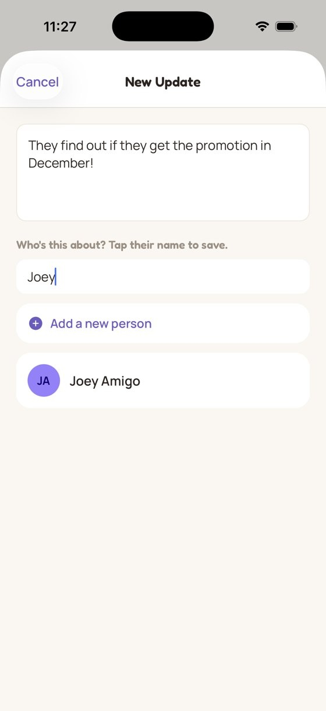
No feed, no algorithm. Just the details, a nudge to check in, and more time with your people IRL.
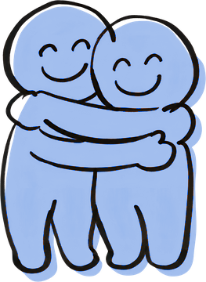
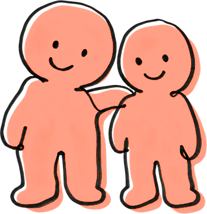
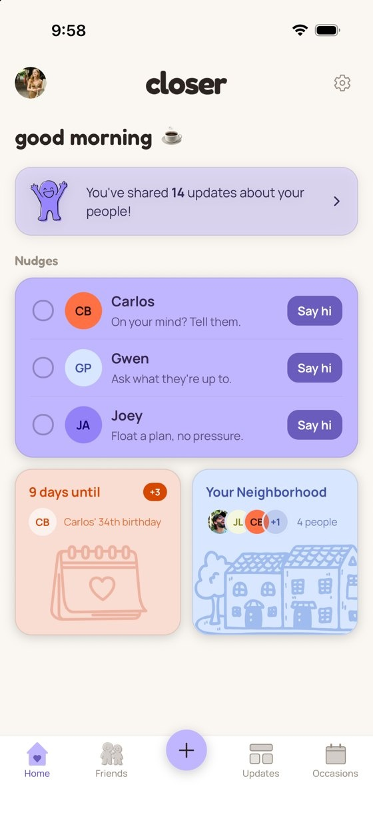
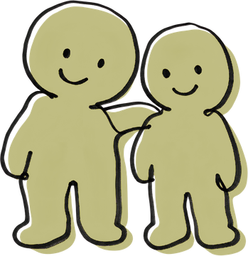
We all want to be the friend people call first. But between the group chats, the DMs, and everything else, the small stuff gets lost.
Closer gives it a home.
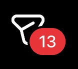
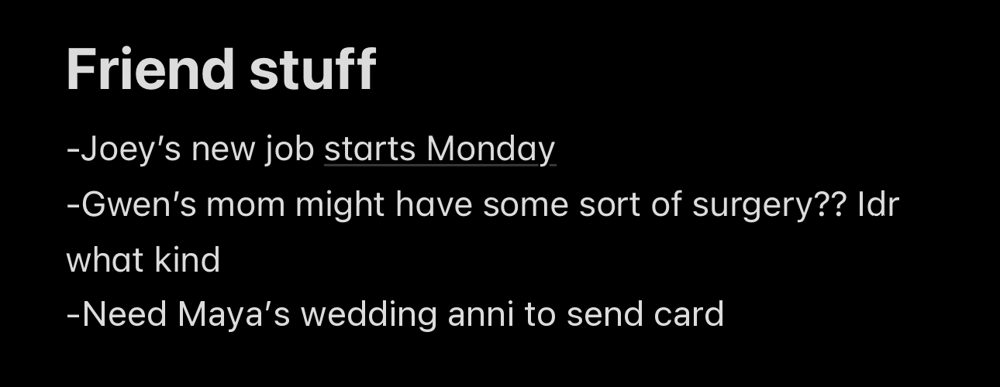
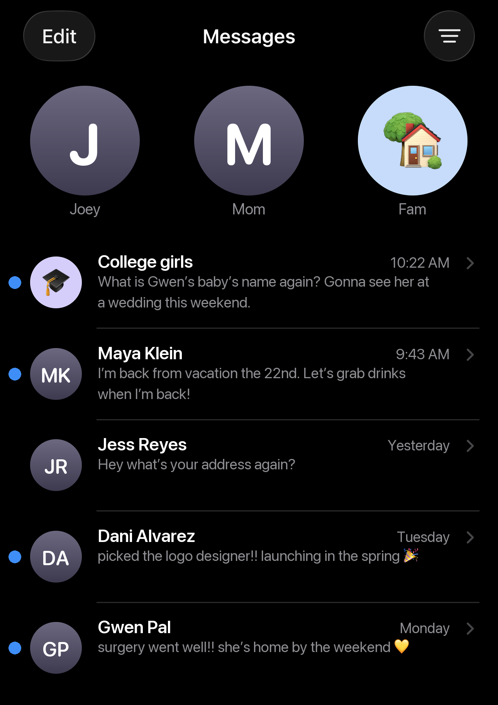
Tap +, type or talk, and pick their name. No hunting for the right screen, so the detail gets saved before you forget it.

Weekly for your best friend, every few months for your college crew. Set a rhythm for each person, and Closer nudges you when it's time.
Life updates, family, the hobbies they love, and the birthdays that matter, all on one page. Tag friend groups and interests to find everyone in your book club or who loves to hike.
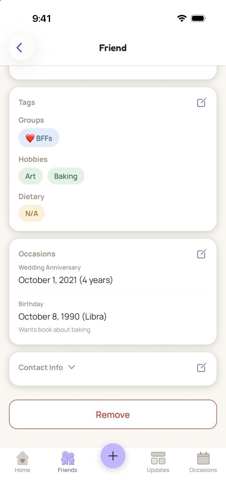
The times when remembering the small stuff matters most.
Walk in knowing whose kids started kindergarten and who just moved across the country.
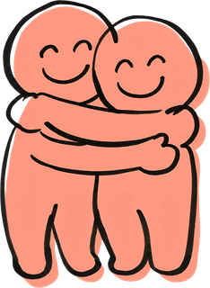
Keep track of your check-ins after a loss, and what they shared last time you talked.
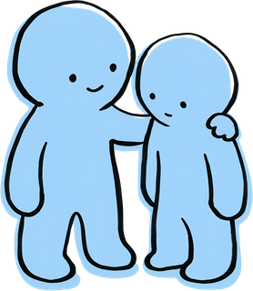
Remember the baby's name, the birthday, and when you promised to drop off dinner.
Save their names, their dog's name, and who offered to show you the best coffee spot in town.
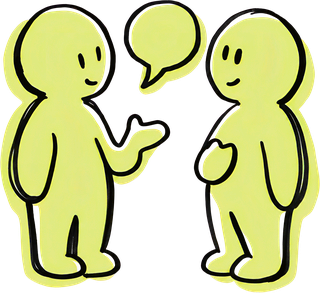
Closer is a friendship app that helps you be the friend you want to be. Save what your friends share in seconds, choose how often you want to check in with each person, and get a gentle nudge when it's time. No feed and no algorithm, just a simple system for showing up for your people in real life.
Not yet. Closer is starting on iPhone, and Android is next. Join the waitlist, tell us what phone you have, and you'll hear as soon as it's ready.
Yes. What you save about your friends is for you. There's no feed, no algorithm, and no one browsing your notes. Read the privacy policy.
Closer is in testing with a small group of friends right now. Join the waitlist and you'll be the first to know when it opens up.
Closer is designed and built by Carrah Lingo, a communications and community strategist with 12 years of experience bringing people together. Friendship has always been her top priority, so she created Closer to give the people who matter most the same thoughtful systems she builds for work. Read her story →
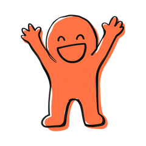
Closer is a private space for the people you love, launching soon. Join the waitlist and be the first to know.
Join the waitlist